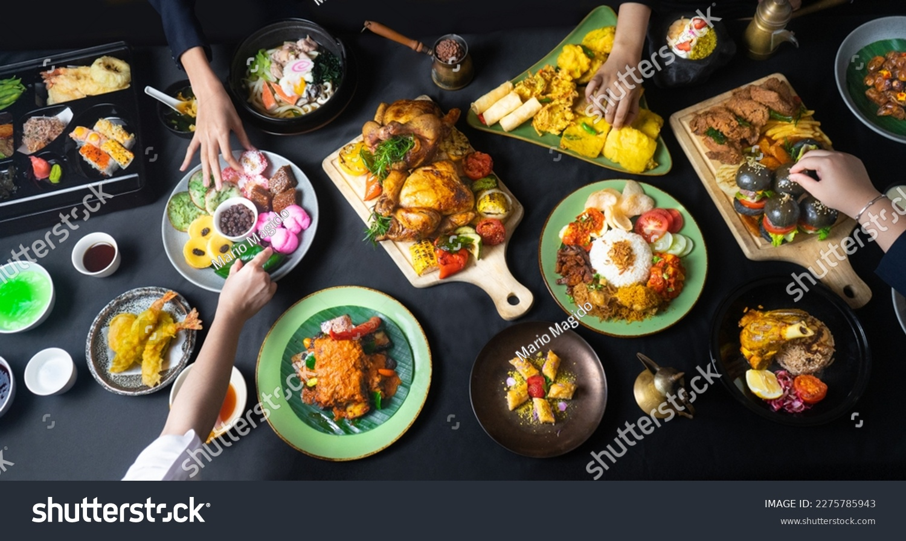

The best recipes in the world!
Here you'll find easy, delicious, and colorful recipes for all tastes. From traditional dishes to new creations, we want to inspire you to cook with passion and enjoy every moment in the kitchen. Explore, try, and discover your next favorite dish!

:max_bytes(150000):strip_icc():gifv()/218723-italiansausageandmushroomlasagnawitbechamelsauce-passano-alr0321-9415-2000-80ad46bc31064c978c4b4612e19413f1.jpg)
:max_bytes(150000):strip_icc():gifv()/5925391-3978823c3d6f4b0e80a4fb5ff2033db6.jpg)
:max_bytes(150000):strip_icc():gifv()/7766512-9c497aa472ef444d95679acb6fb813ea.jpg)